読む人ごとに分けてあります。自分に当てはまる所をご覧ください。「入力する人」の項は、全員が読む所です。「全体を見る人」「管理者」の項は、その役割の人だけが使います。
はじめに
まちねこ帳(のら猫の頭数調査のためのアプリ)は、調査に加わる人が自分のスマホで猫の記録をつけるためのものです。見つけた猫の毛色・さくら耳・様子と、見つけた場所を記録します。
記録はどこに行くか
- 記録は、まずスマホの中に保存されます。電波があれば、管理者の受け付け(表計算のシート)に自動で送られます。
- 見られるのは、基本的に自分が記録した分だけです。「全体を見る」役割の人だけが、全員の分も見られます。
- 写真は、撮影場所の情報を消してから保存されます。
ホームと、画面の下の4つ
ログインすると、ホームが出ます。いちばん上に「これまでの登録 みんなで 〇頭」「そのうち自分 〇頭」(削除した記録と、いなくなった猫は数えません。みんなの数が受け付けから届いていない時は「—」)と、「まだ送れていない記録」の件数が出ます。その下に大きな「猫を記録する」、4つのボタン「記録の一覧」「地図」「えさ場」「集計」、小さなボタン「使い方」「不具合を知らせる」「設定」が並びます(管理者は「管理」も出ます)。
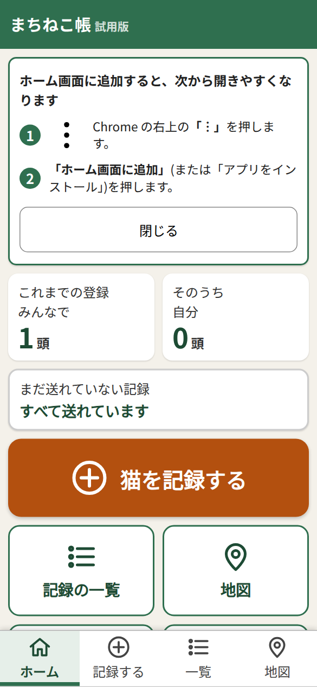
画面の下には、いつも「ホーム」「記録する」「一覧」「地図」の4つが並びます。押すと、その画面に切り替わります。今いる画面は、色が付いて太字になり、下に線が出ます。
えさ場・集計・設定・不具合を知らせる・管理の画面では、上に「← ホーム」と画面の名前が出ます。「← ホーム」を押すとホームに戻ります。スマホの「戻る」ボタンでは、1つ前の画面に戻ります。
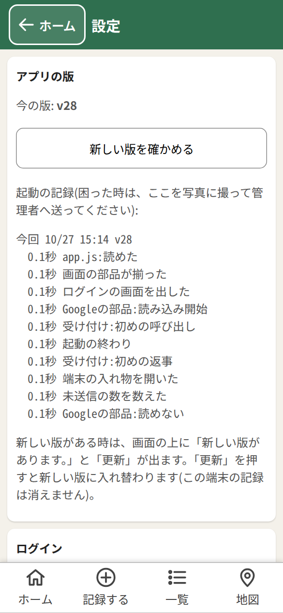
補足: 保存・登録・送るなどのボタンは、押すと「保存しています…」「処理中…」に変わり、終わるまで押せません。2回押しても、2回登録されることはありません。
ことばの説明(ここで一度だけ)
- ログイン: 「この人です」とアプリに知らせて、使えるようにすること。
- QR(キューアール): 白黒の四角い模様です。アプリの中の「カードの QR を読む」で、カメラで読みます。
- NFC(エヌエフシー): カードをスマホの裏側にかざすだけで読み取れる仕組みです。
ログイン入力する人
ログインのしかたは2通りです。管理者から案内された方で行ってください。
Google のアカウントがある人
アプリを開くと、いちばん上に「Google でログイン」があります。そのボタンを押します。
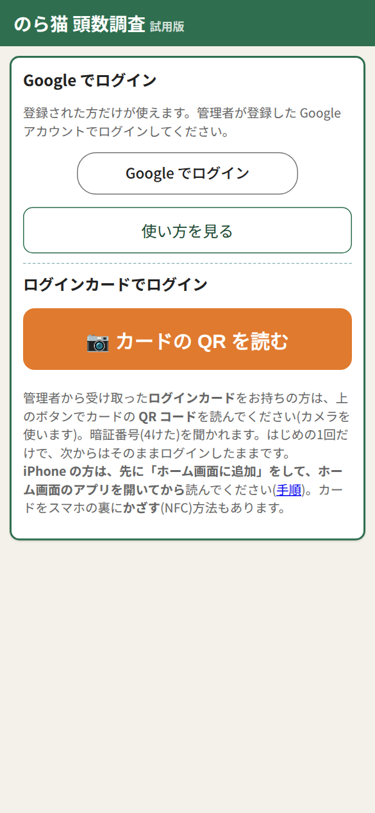
管理者が登録した Google アカウントを選びます。登録していないアカウントだと「登録されていません」と出ます。管理者に連絡してください。
補足: アプリは、登録された方だけが使えます。ログインするまでは、入力も一覧も地図も出ません(ログインの画面と、この「使い方」だけです)。はじめてのログインは、電波のある所で行ってください。
- Google でログインすると、スマホに30日使える通行証が入ります。使った日が変わるたびに、また30日に延びます。そのため、電波が無い所でも、入力・保存はそのままできます(電波が戻ると自動で送ります)。
- 「全員の記録」や「管理」の画面は、時間がたつと「Google でもう一度ログインしてください」と出ることがあります。その時は「Google でログイン」を押し直してください。
- ログインの直後に、前に送った自分の記録(別のスマホで記録した分も)が、自動で一覧と地図に出ます。
補足: ログアウトしても、スマホにためた記録は消えません。次にログインした時に送ります。
ログインカードをもらった人
Google のアカウントが無い人には、ログインカード(紙の QR か、NFC のタグ)と、4けたの暗証番号が渡されます。暗証番号は、口頭や電話で伝えられます。
【iPhone】ホーム画面に追加して、アプリの中で QR を読む
Safari で、アプリの URL(管理者から案内されたもの)を開きます。カードの QR をカメラで読んで開いた時は、「先にホーム画面に追加してください」の案内が出ます。右下に Safari のマークが出ていたら、それを押して Safari で開き直します。
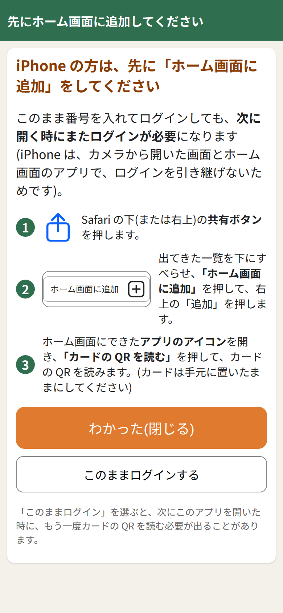
Safari の下(または右上)の共有ボタンを押し、一覧を下にすべらせて「ホーム画面に追加」を押し、右上の「追加」を押します。
ホーム画面にできたアプリのアイコンを開きます。ログインの画面の一番上に、大きな「カードの QR を読む」ボタンがあります。
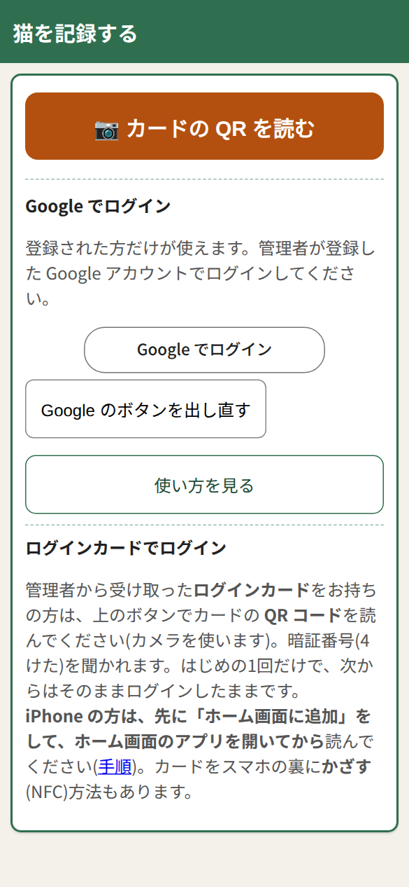
ボタンを押すと、カメラが開きます(はじめは「カメラを使う」の許可を聞かれるので「許可」)。四角い枠にカードの QR を入れると、自動で読み取って、暗証番号の画面に進みます。
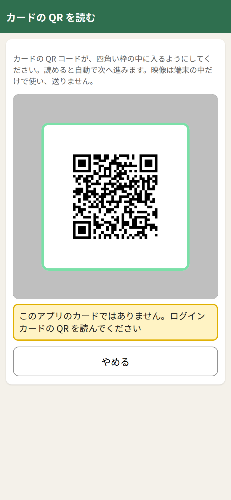
4けたの暗証番号を入れて「ログイン」を押します。
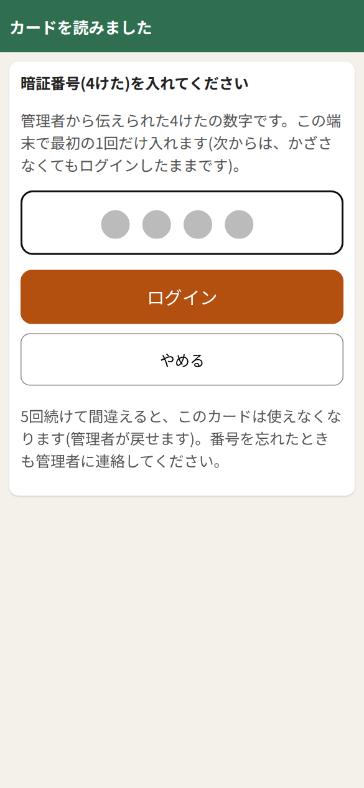
ホームが出ます。「猫を記録する」の画面の上の「入力した人」に、自分の呼び名(カード)が出ればログイン完了です。
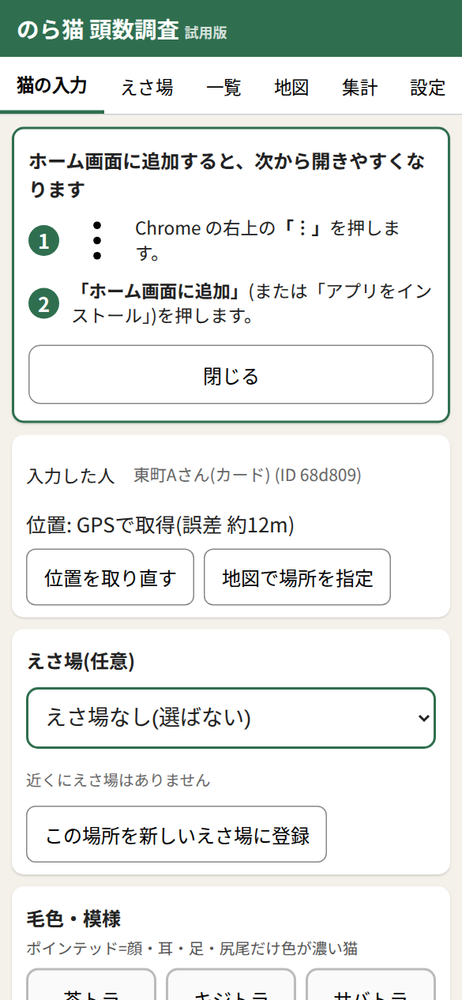
【Android】
アプリを開き、「カードの QR を読む」を押して、カードの QR を枠に入れます。NFC のカードは、スマホの裏側にかざしても開きます(紙のカードは、カメラで読んでも開きます)。
暗証番号(4けた)を入れて「ログイン」を押します。
ログインのあと、「ホーム画面に追加すると、次から開きやすくなります」と1回出ます。「ホーム画面に追加する」を押す(出ない時は Chrome の右上「︙」→「ホーム画面に追加」)と、次からホーム画面のアイコンで開けます。
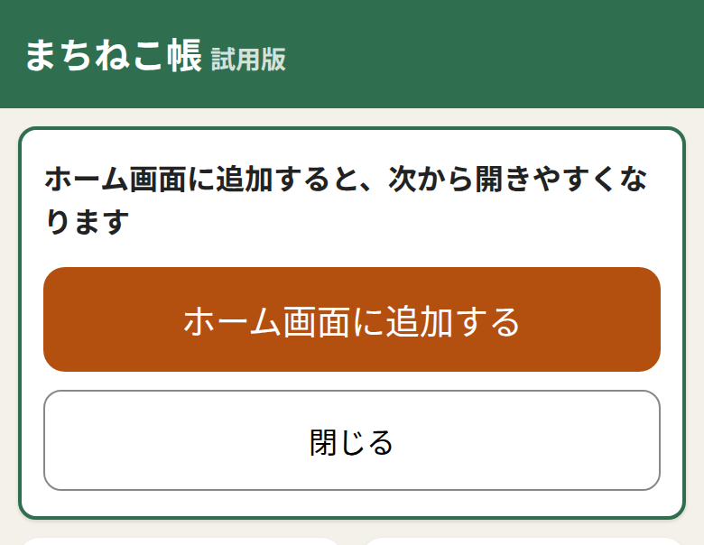
補足: カメラの許可を断ってしまった時: iPhone は「設定」→「Safari」→「カメラ」を「確認」か「許可」にして、アプリを開き直します。Android は「設定」→「アプリ」→ このアプリ →「権限」→「カメラ」です。カードの QR は端末の中だけで読み取り、映像は送りません。
- 暗証番号を入れるのは、そのスマホで最初の1回だけです。次からは、アプリを開くだけでログインしたままです。90日使わないと、もう一度カードと番号が要ります。
- 暗証番号を5回続けて間違えると、そのカードは止まります。止まったら、管理者に連絡してください(戻してもらえます)。番号を忘れた時も同じです。
- カードをなくした時も、管理者に連絡してください。前のカードはすぐ使えなくなり、新しいカードが渡されます。記録は同じ人としてつながります。
- カードは、他の人に渡さないでください。
猫を記録する入力する人
見つけた猫の前で、ホームの大きな「猫を記録する」(または画面の下の「記録する」)を押します。上から順に入れていきます。
位置: 開くと、いまの場所が自動で入ります(「位置: GPSで取得」と出ます)。違う時は「位置を取り直す」、猫が別の場所にいた時は「地図で場所を指定」を押し、地図で猫がいた場所を押してピンを立て(押し直すと動きます。ピンは指でも動かせます)、「ここで確定」を押します。選んだ場所は、入力の画面に小さな地図のピンで出ます(選び直す時は「地図で選び直す」。「やめる」を押すと前の場所のままです)。位置の許可を聞かれたら「許可」を選びます。
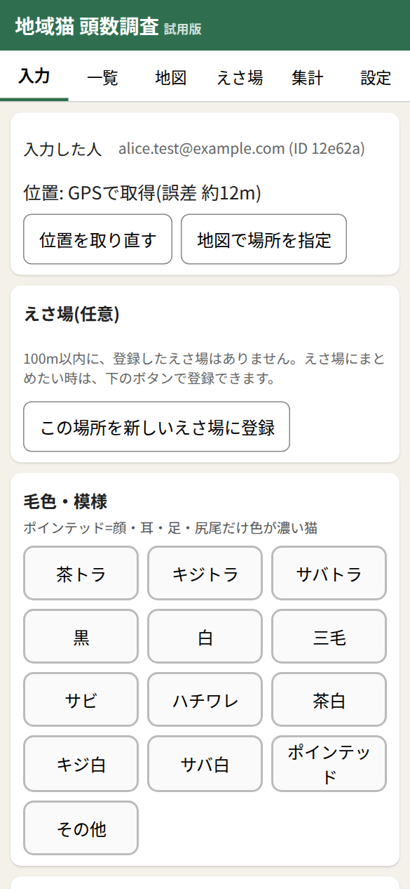
毛色・模様: 15種類が3列に並んでいます(キジトラ・キジ白・黒白・黒・三毛・茶トラ・茶白・サバトラ・サバ白・サビ・白・灰色(グレー)・灰白・シャム系・その他)。それぞれに見本の写真の丸が付いています。当てはまるものを1つ押します。選ぶと緑になり、表のすぐ下に「選んだ毛色」と大きな写真が出ます(合っているか確かめられます)。写真が小さくて分かりにくい時は、表の上の「見本を大きく見る」を押すと、画面いっぱいに大きな写真が並びます。押した物が選ばれて、元の画面に戻ります(✕ か 戻るボタンで、選ばずに戻ります)。当てはまるものが無い時は「その他」を押し、すぐ下に出る欄に毛色を短く書きます(20字まで・必ず書く)。続けて、そのすぐ下の「毛の長さ」を「短毛」「長毛」「分からない」から選びます(はじめは「分からない」。押し間違えても押し直せます)。
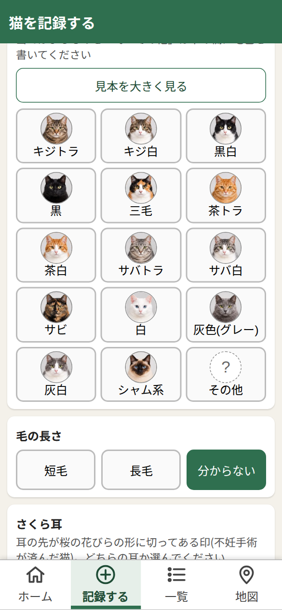
さくら耳: 耳の先が桜の花びらの形に切ってある猫は、不妊手術が済んだ印です。右耳か左耳かを選びます。ない時は「なし」、見えない時は「確認できず」です。
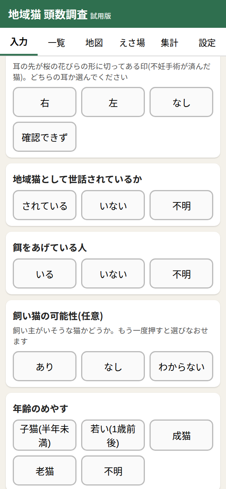
不妊手術: 「済み」「まだ」「分からない」から選びます。はじめは「分からない」です。さくら耳で右か左を選ぶと、自動で「済み」になります(違う時は押し直せます)。耳の印が無くても、手術済みと分かっている時(世話をしている人から聞いた等)は「済み」を押します。
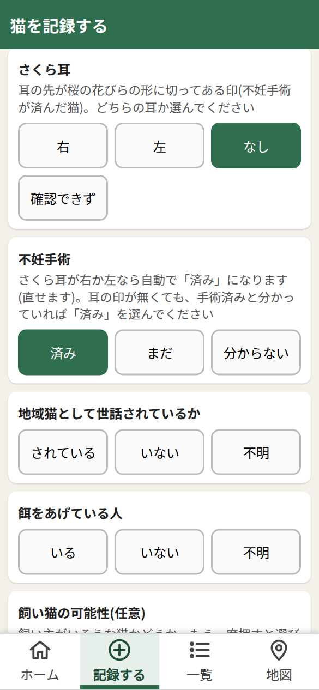
続けて、世話されているか・餌をあげている人・年齢・性別・体の様子・尻尾・人への慣れ、を選びます。迷う時は「不明」を選んで大丈夫です。
飼い猫の可能性(任意)
飼い主がいそうな猫かどうかを、「あり」「なし」「わからない」から選べます(入れなくてもかまいません)。「あり」を押すと、理由を選ぶ欄が出ます。いくつでも選べます。
例: 「首輪がある」を選んだところ。「その他」を選ぶと、短い文字(30字まで)で書く欄が出ます。もう一度押すと選びなおせます。
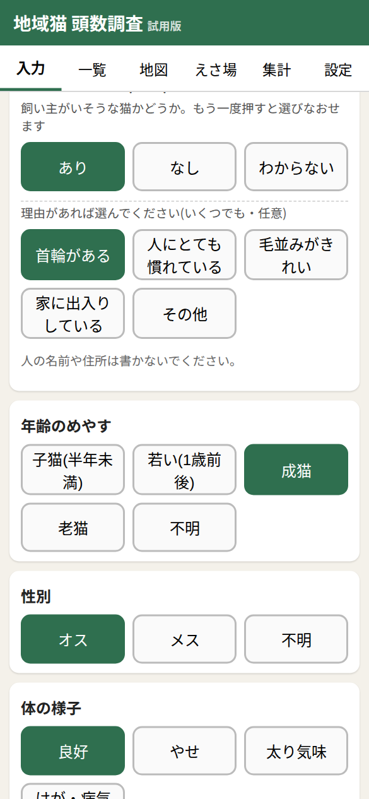
写真・目立つ特徴(任意)
「カメラで撮る」か「写真を選ぶ」で、写真を3枚まで付けられます。目立つ特徴(例: 右前足だけ白い)も書けます。付けた写真の小さな絵を押すと、大きく見られます(右上の ✕ は写真を外すボタンです)。
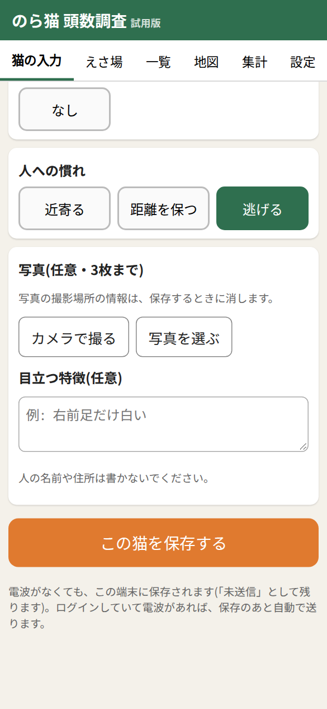
保存する
- いちばん下の「この猫を保存する」を押します。押すと「保存しています…」に変わり、終わるまで押せません。
- 電波があれば、保存のあと自動で送られます。
- 電波が無い時も、スマホの中に保存されます(「未送信」と出て、画面の右上と、ホームの「まだ送れていない記録」に件数が出ます)。電波が戻ると自動で送ります。すぐ送りたい時は、電波のある所でホームの「まだ送れていない記録」の「↑送る」を押します。
- 近くに同じ毛色・さくら耳の記録があると、「前に記録した猫ではありませんか?」と出ます(同じ猫を二度記録しないための注意です)。
えさ場入力する人
猫がよく集まる餌場・たまり場を「えさ場」として登録しておくと、記録のとき近くのえさ場を選んで、猫をまとめられます。登録は自分用で、見えるのも自分の分だけです。
えさ場を登録する
ホームの「えさ場」を押して、えさ場の画面を開き、「今の位置でえさ場を登録」を押します。その場にいなくても(家からでも)登録できます: 「地図で場所を指定して登録」を押し、地図でえさ場の場所を押してピンを立て、「ここで確定」を押してください。登録の画面に、選んだ場所が小さな地図で出ます(「地図で選び直す」で選び直せます)。
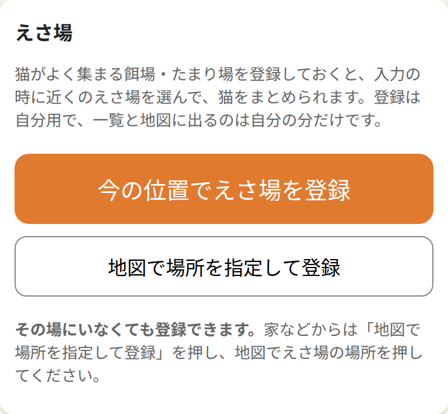
名前(30字まで。例: 公園の入口)を入れて、「このえさ場を登録する」を押します。メモ(60字まで)は任意です。人の名前や住所は書かないでください。
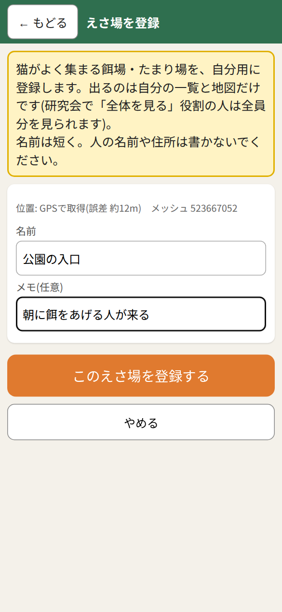
登録すると一覧に出ます。「名前を直す」「使わない」「地図で見る」が使えます。場所は直せません。場所が違う時は、「使わない」にして、新しく登録してください。
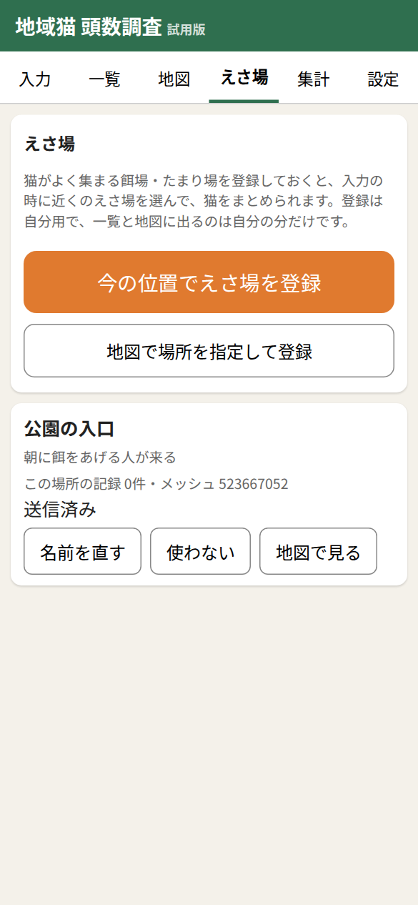
猫とえさ場を結び付ける
「猫を記録する」の画面の「えさ場(任意)」は、プルダウン(押すと選択肢の一覧が出る欄)です。はじめは「えさ場なし(選ばない)」になっています。えさ場に結び付けない時は、そのままでかまいません。
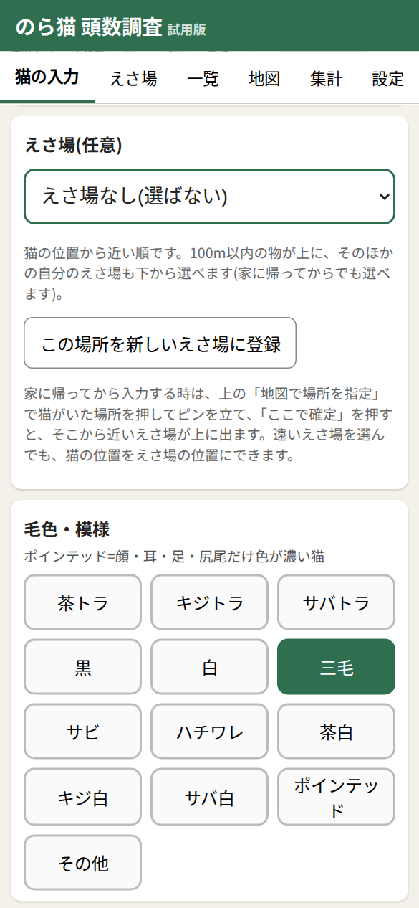
押すと、1行目の下に「近くのえさ場」(猫の位置から100m以内・近い順・「名前(約 35m)」の形)、その下に区切りの「そのほかの自分のえさ場」(それ以外の、使っている自分のえさ場の全部・近い順・距離つき)が出ます。どのえさ場も選べます(「使わない」にしたえさ場は出ません)。この猫が来ているえさ場を選びます。
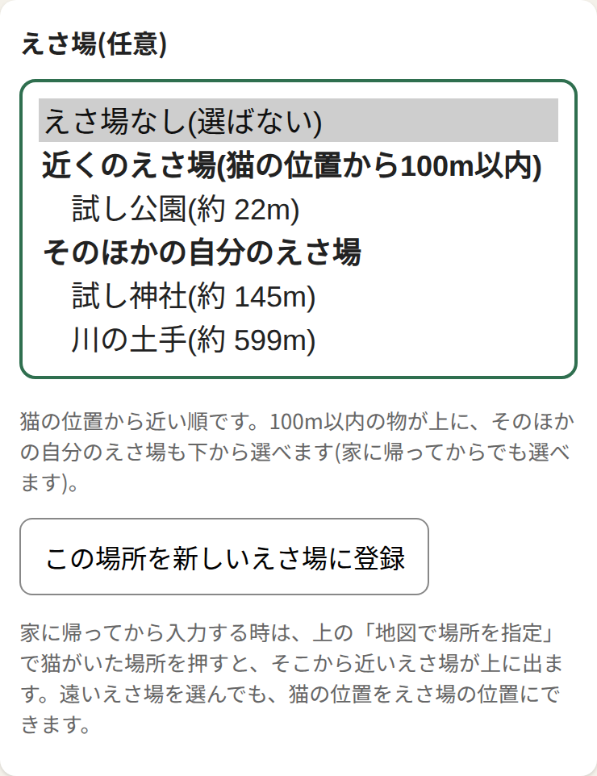
選んだえさ場の名前が欄に出ます。やめる時は、もう一度押して1行目の「えさ場なし(選ばない)」を選びます。
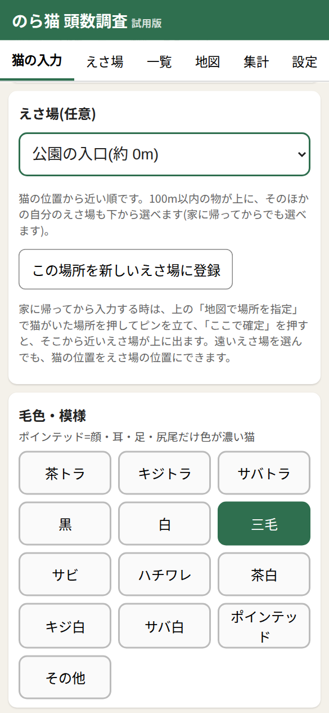
家に帰ってから入力する時
えさ場を立ち去った後でも、猫をそのえさ場に結び付けて記録できます。「猫を記録する」の画面の上の「地図で場所を指定」を押し、地図で猫がいた場所を押してピンを立て、「ここで確定」を押してください。そこから近いえさ場が「近くのえさ場」に出ます。
猫の位置から100mより遠いえさ場を選ぶと、「えさ場から 約〇〇m 離れています。猫の位置をえさ場の位置にしますか?」と出ます。「はい」を押すと、猫の位置がそのえさ場の位置になります(位置の表示は「えさ場「〇〇」の位置にしました」。シートの「位置の取り方」には「えさ場の位置」と残ります)。「そのまま」なら、位置は変わらず、えさ場だけ結び付きます。
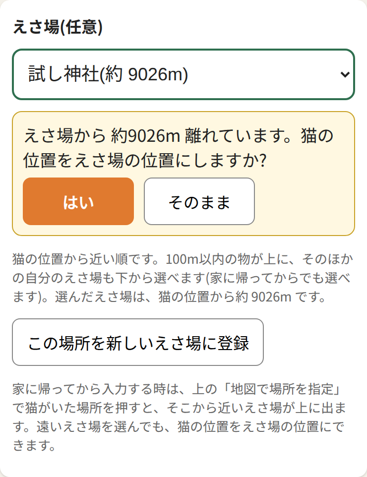
- 猫の位置から100m以内にえさ場が無い時は、「(猫の位置から100m以内のえさ場はありません)」と出ます(下の「そのほかの自分のえさ場」からは選べます)。下の「この場所を新しいえさ場に登録」で、その場で登録もできます(登録すると、そのえさ場が選ばれた形で戻ります)。
- 「位置を取り直す」や地図で、猫の位置が変わると、並べ直します。選んでいたえさ場はそのままです(100mより遠くなった時は、上の案内がもう一度出ます)。
- 「間違いを直す」「状態が変わった」の画面のえさ場も、同じ並びのプルダウンです(1行目は「えさ場なし(外す)」。その記録の場所から近い順で、遠いえさ場も「そのほかの自分のえさ場」から選べます)。
えさ場を削除する
「えさ場」の画面で、そのえさ場の「削除」を押します。「本当に消しますか」と聞かれるので、よければ「OK」を押します。結び付いていた猫は「えさ場なし」になります(猫の記録は消えません)。
削除したえさ場は、下の「削除したえさ場」に出ます。30日の間は「元に戻す」で戻せます(猫の結び付きは戻りません。必要なら「間違いを直す」で付け直します)。
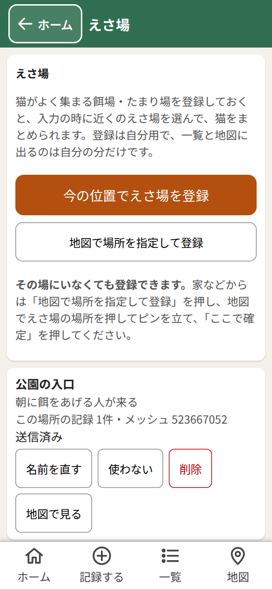
一覧・地図・集計入力する人
一覧
ホームの「記録の一覧」(または画面の下の「一覧」)を押すと、自分が記録した猫がえさ場ごとにまとまって出ます。えさ場の名前を押すと、開いたり閉じたりします(名前の右は、そのえさ場の頭数)。えさ場に結び付けていない猫は、最後の「えさ場なし」にまとまります。はじめは、いちばん新しい猫のいるえさ場が開いています。送った記録も、送っていない記録も出ます。
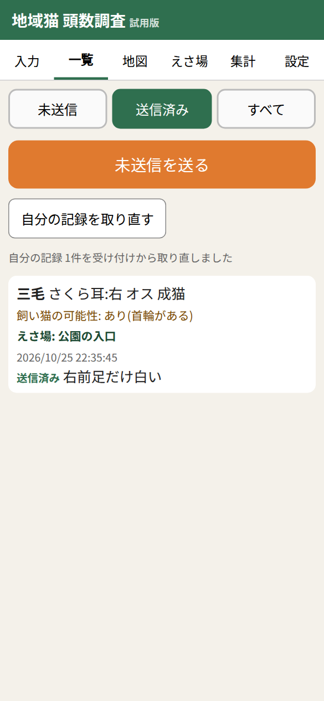
上の絞り込みで「すべて」「さくら耳 あり」「さくら耳 なし」「飼い猫の可能性」「いなくなった」を選べます(数字は当てはまる件数)。猫ごとの「この猫の状態を変える」を押すと、その猫の「状態が変わった」の画面がすぐ開きます(下の「記録を直す」)。
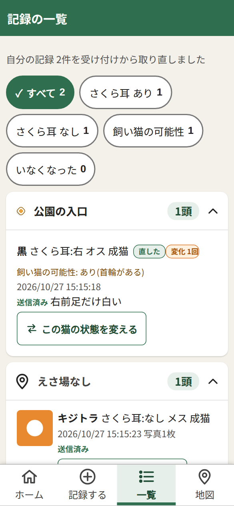
電波が無くて送れなかった記録は「未送信」と出て、画面の右上に件数が出ます。一覧の上にも「まだ送れていない記録を送る」が出ます。電波のある所で、これを押すと送れます。
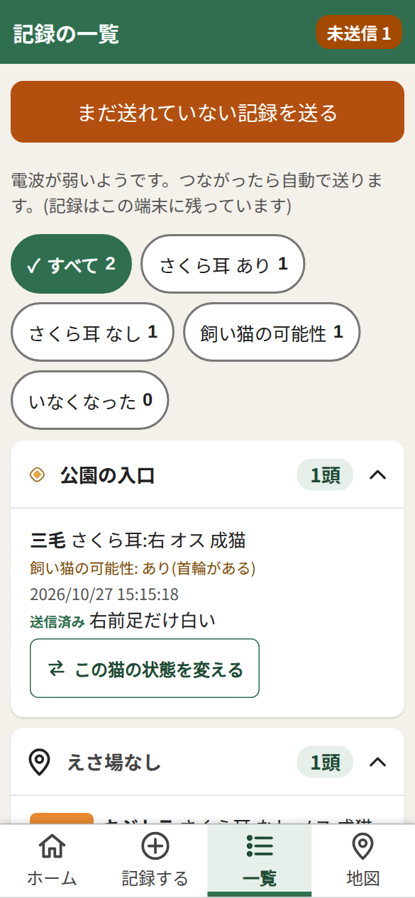
ホームの「まだ送れていない記録」にも件数と「↑送る」が出ます。ここを押しても送れます。全部送れている時は「すべて送れています」と出ます。
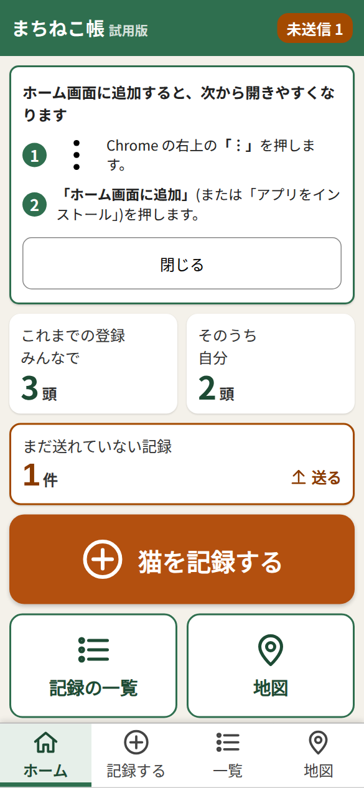
- 一覧・地図・集計は、自動で新しくなります(ログインの直後・アプリを開いた時・電波が戻った時・記録を送った後・5分以上たってアプリに戻った時)。別のスマホで記録した分も出ます。
- 新しくしている間は、一覧の上に「新しくしています…」と出ます。すぐに確かめたい時は、一覧の下の「自分の記録を取り直す(ふだんは自動)」を押します。
- まだ送っていない記録は、新しくしても消えません。
- 「いなくなった」にした猫は、ふだんは出ません。上の絞り込みの「いなくなった」を選んだ時だけ、灰色の薄い形で出ます(下の「記録を直す」の「いなくなった時」)。
写真を大きく見る
一覧の小さな写真、記録の詳しい画面の写真を押すと、画面いっぱいに大きく出ます。詳しい画面では、2枚目からの写真も小さく並びます。
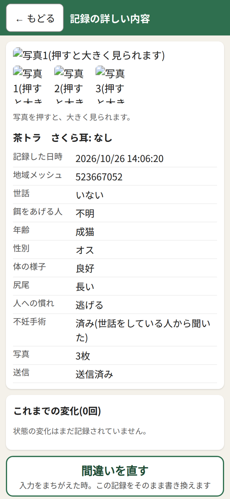
2本指で広げると拡大します。2回続けて軽くたたく(ダブルタップ)と拡大し、もう一度で元に戻ります。拡大している時は、1本指で動かせます。写真が何枚かある時は、左右にすべらせるか「‹」「›」で次・前の写真に送れます(上に「2 / 3」のように出ます)。閉じる時は、右上の「✕」・写真のまわりを押す・スマホの「戻る」のどれかです。
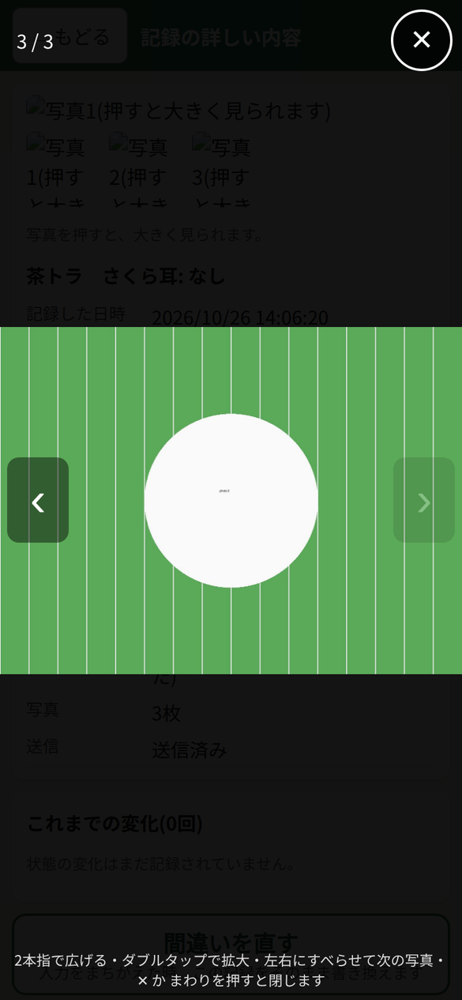
補足: そのスマホで撮った(選んだ)写真は、スマホの中にあるので、電波が無くても見られます。
ほかのスマホで記録した写真
ほかのスマホで記録した猫(取り直しで入った自分の記録・管理者の「全員の記録」)も、写真が出ます。写真は受け付けから読み込みます(一覧では、画面に見えた記録の分だけ小さな写真を読み込みます)。押すと、大きな写真を読み込んで画面いっぱいに出ます。
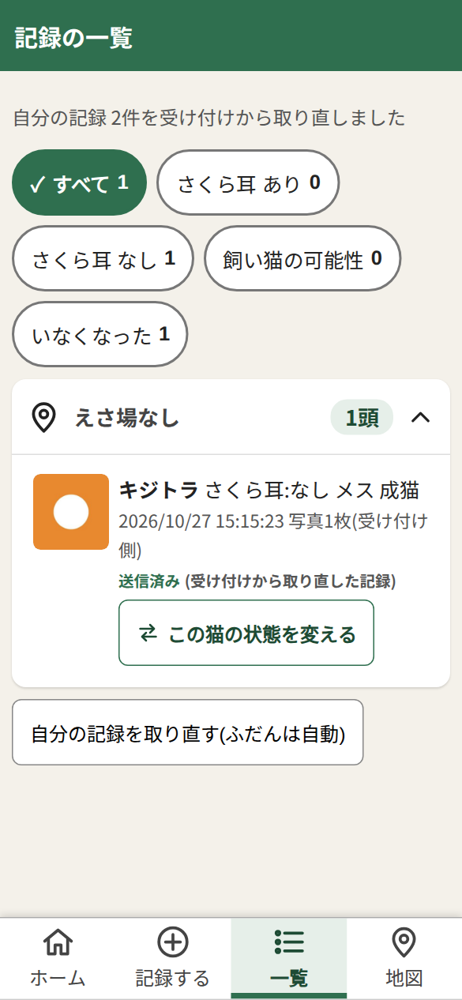
電波が弱くて読み込めない時は、写真の所に「写真を読み込めません」と「再読み込み」が出ます。電波のよい所で「再読み込み」を押してください。
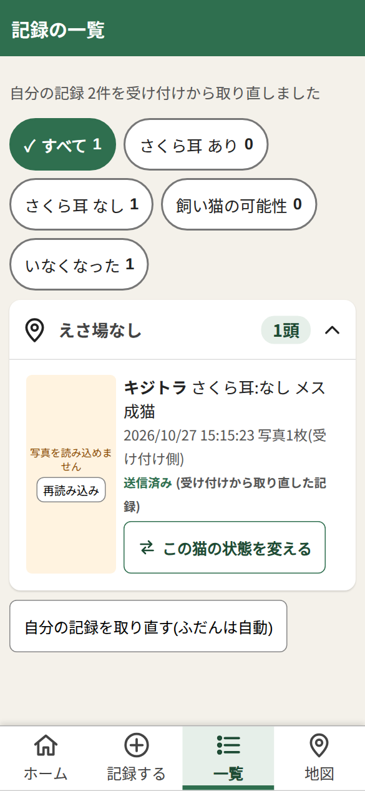
- 一度見た写真はスマホに控えるので、次からは通信なしで出ます(控えが多くなると、古い物から消えます。消えても、また読み込めます)。
- 通信量の目安: 小さな写真は1枚 約10〜20KB、大きな写真は1枚 約100〜300KB です。
- 見られる写真は、記録と同じです。入力する人は自分の記録の写真だけ、「全体を見る」「管理者」の人は全員の記録の写真です。
補足: 写真の元は、スプレッドシートを持つ人のドライブの「猫調査 写真(アプリから)」フォルダにあります。受け付けが、見てよい人にだけ写真を渡します(写真を公開のリンクにはしません)。
地図
ホームの「地図」(または画面の下の「地図」)を押すと、自分が記録した猫(印の色: ピンク=さくら耳あり・青=なし・灰色=確認できず)とえさ場(橙のひし形)が出ます。「📍 今の場所へ」を押すと、いまいる所に地図が動き、青い点で示します。
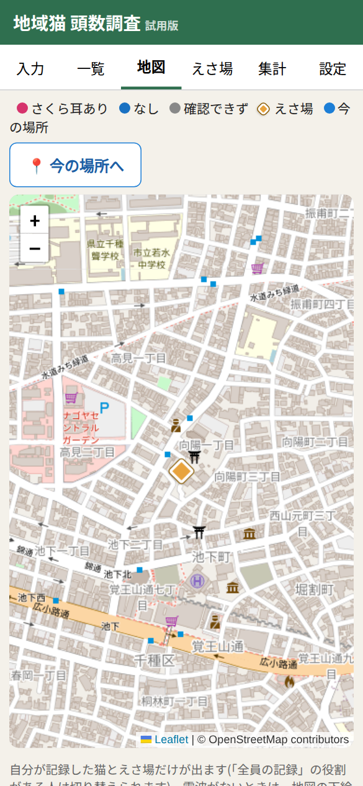
補足: 近い所の印は、丸の中の数字(その中の猫の数)にまとまります。えさ場が入っている時は、丸の右上に橙のひし形が付きます。拡大すると分かれます。同じ場所の物は、丸を押すと周りに広がり、1つずつ押して見られます。
補足: 地図も、ふだんは今いる猫だけです。「いなくなった猫も見る」に印を入れると、いなくなった猫が灰色の薄い小さな印で出ます。
補足: 電波が無いと、地図の下絵が出ないことがあります(猫の印は出ます)。
集計
ホームの「集計」を押すと、「えさ場ごと」と「区画(約500m四方)ごと」の2つの表が出ます。1行が1つのえさ場(または区画)で、いちばん下が合計です。えさ場に結び付けていない猫は「えさ場に結び付いていない猫」の行にまとまります。区画は「区画 5236-6705-2(約500m)」のように、位置から自動で付く番号で出ます。
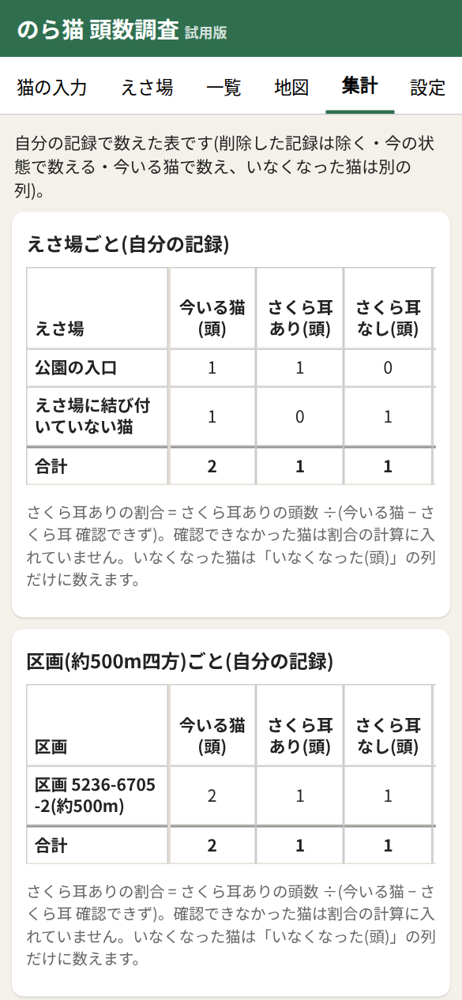
列は左から「今いる猫(頭)」「さくら耳あり(頭)」「さくら耳なし(頭)」「さくら耳 確認できず(頭)」「さくら耳ありの割合」「手術済み(頭)」「手術済みの割合」「飼い猫の可能性あり(頭)」「いなくなった(頭)」です。表は横にすべらせて見られます(左の名前の列は止まったまま)。
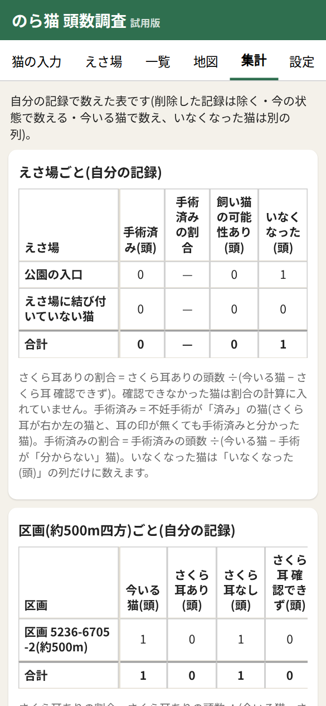
横にすべらせると、右の方に「手術済み(頭)」「手術済みの割合」が出ます。
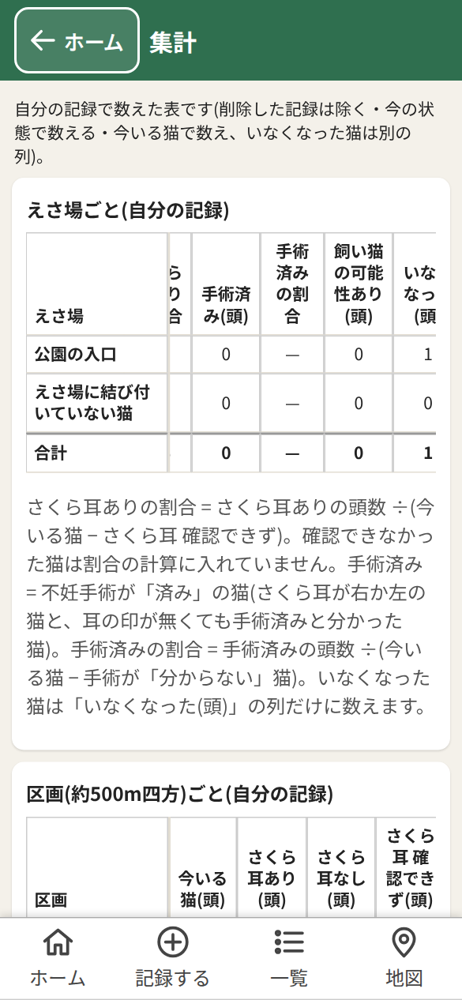
- 頭数は記録の数です。同じ猫を二度記録していると、猫の頭数とは限りません。
- さくら耳ありの割合は、さくら耳が「確認できず」の猫をのぞいた頭数のうち、さくら耳がある猫の割合です。
- 手術済みは、不妊手術が「済み」の猫です(さくら耳が右か左の猫と、耳の印が無くても手術済みと分かった猫)。手術済みの割合は、手術が「分からない」猫をのぞいた頭数のうち、手術済みの猫の割合です(手術済み ÷(今いる猫 − 分からない))。
- この版より前に入れた記録(不妊手術の欄が無かった記録)は、さくら耳が右か左なら「済み」、ほかは「分からない」として数えます。
- いなくなった猫は、今いる猫の頭数に入れず、右端の「いなくなった(頭)」だけに数えます。表の下に、いなくなった理由ごとの頭数が小さく出ます。
- 削除した記録は数えません。
記録を直す入力する人
一覧の記録を押すと、詳しい画面が開きます。ここから2つのことができます。
下の「間違いを直す」: 入力を間違えた時に、その記録をそのまま書き換えます。位置・日時・写真は直せません。直した記録には「直した」の印が付きます。
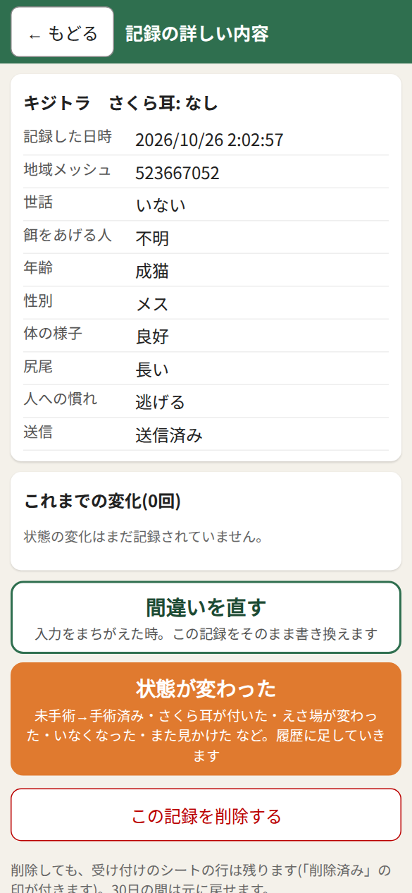
直す画面です。今の値が選ばれているので、違う所だけ押して「保存」します。
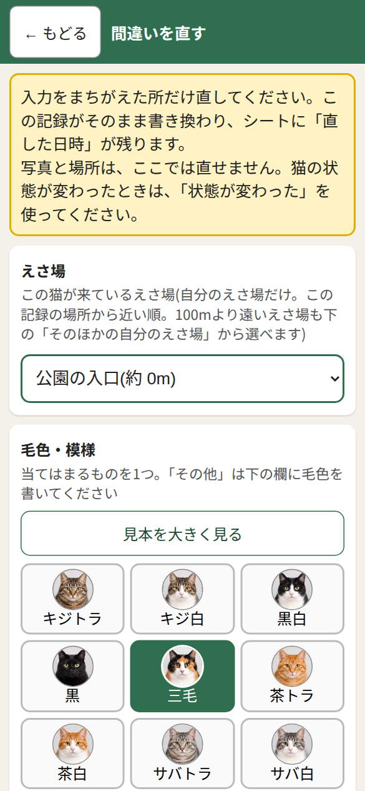
「状態が変わった」: 猫の様子が変わった時(手術が済んだと分かった・さくら耳が付いた・世話の様子が変わった・えさ場が変わった・毛の長さが分かった等)に、履歴として足します。記録は消えず、「いつ・何が変わったか」が残ります。送ってから使えます。
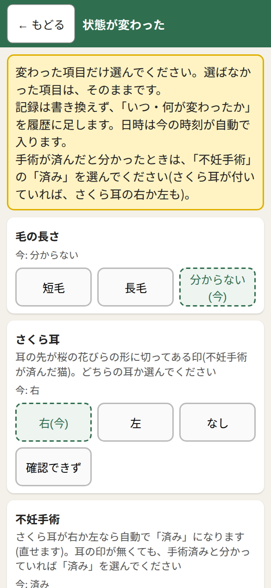
手術が済んだと分かった時は、「状態が変わった」の「不妊手術」で「済み」を押します(さくら耳が付いていれば、さくら耳の右か左も)。
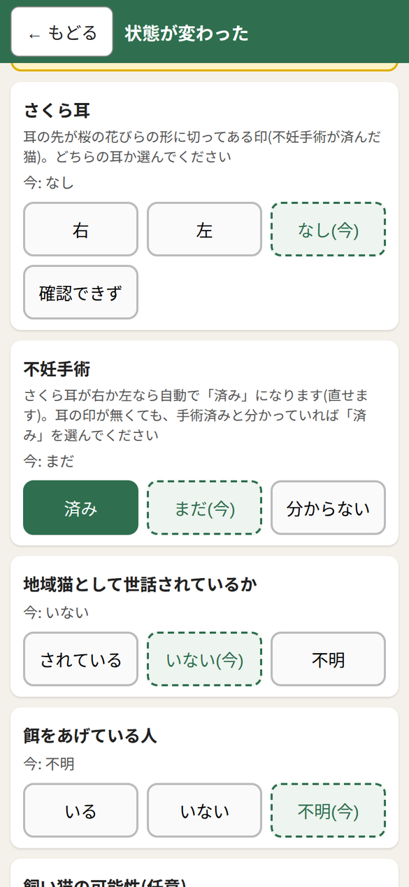
詳しい画面の「これまでの変化」に、履歴が並びます。一覧には「変化 1回」のような印が付きます。

補足: 電波が無い時に直した内容も、スマホに貯まり、電波があるときに送られます。
いなくなった時
見かけなくなった・保護された・亡くなった など、猫がいなくなった時は、削除ではなく「状態が変わった」の中の「いなくなった」を使います。記録は残り、「いつ・なぜいなくなったか」が履歴に残ります(削除は、入力を間違えた時のためのものです)。
詳しい画面の「状態が変わった」を押し、「いる/いない」の「いなくなった」に印を入れます。理由(任意・1つ): 「見かけなくなった(行方不明)」「保護・譲渡された」「飼い主が見つかった」「亡くなった」「その他」から選びます。「その他」は短く書けます(人の名前や住所は書かないでください)。いなくなったと分かった日は今日が入っています。違えば変えます。「この変化を記録する」を押します。
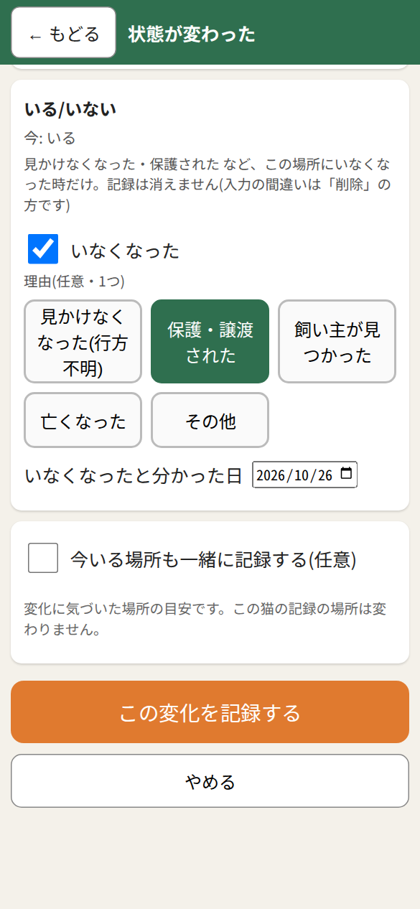
いなくなった猫は、一覧・地図にふだんは出ません。一覧では絞り込みの「いなくなった」を選ぶと、地図では「いなくなった猫も見る」に印を入れると、灰色の薄い形で、理由と日つきで出ます。
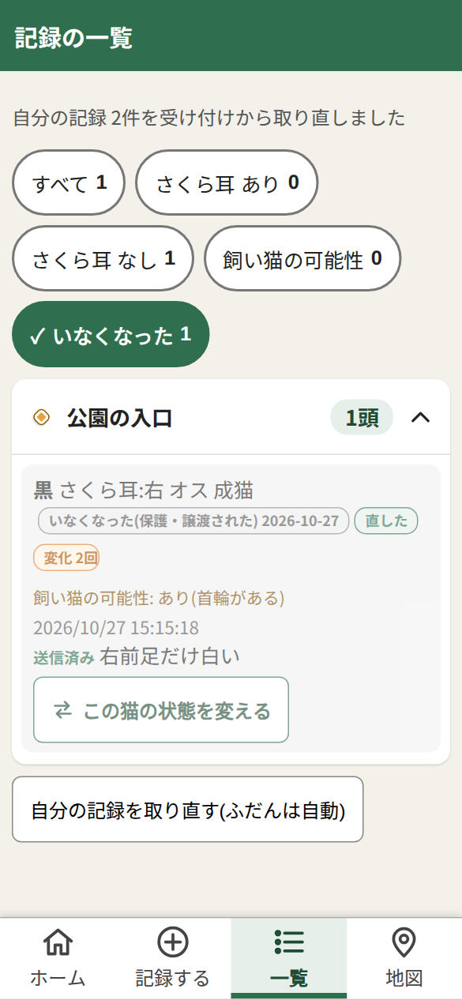
- また見かけた時: その猫の詳しい画面 →「状態が変わった」→「また見かけた(「いる」に戻す)」に印を入れて記録します。一覧・地図・集計に、今いる猫として戻ります。履歴にも残ります。
- 「いなくなった」にできるのは、自分の記録だけです。
- 受け付けのシートでは、記録の行の「いなくなった日」「いなくなった理由」の列に入り、「変化」シートに1行(項目「いる/いない」・前「いる」→後「いなくなった(理由) 日」)が残ります。
記録を削除する
詳しい画面のいちばん下の「この記録を削除する」を押します。「本当に消しますか」と聞かれるので、よければ「OK」を押します。消した記録は、一覧・地図・集計に出なくなります。消せるのは自分の記録だけです。
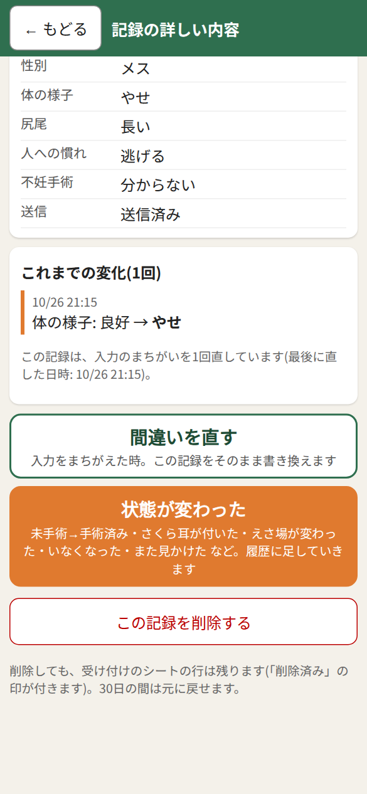
消した記録は、一覧のいちばん下の「削除したもの」に出ます。30日の間は「元に戻す」で戻せます。
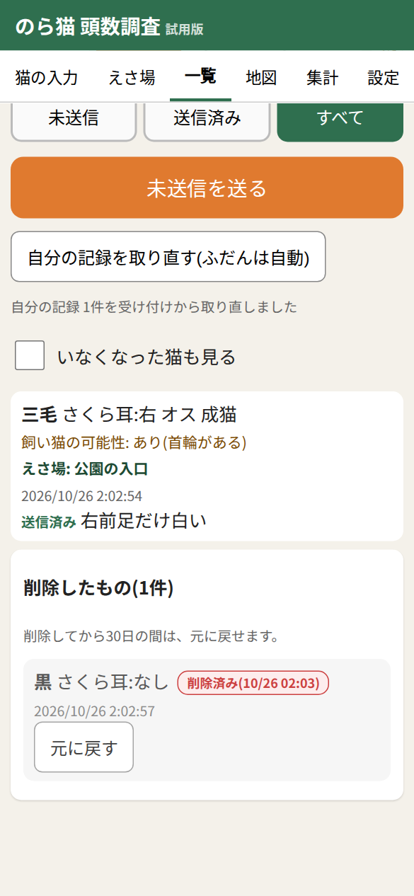
- 受け付けのシートの行は消えません(「削除済み」の印と日時が付きます)。30日を過ぎると元に戻せませんが、行は残ります。
- まだ送っていない記録を消した時は、受け付けには送りません。
- 電波が弱くて、「保存しました」のあと返事が切れた記録は、受け付けには届いていることがあります。その記録を消しても、消したままになります(前は、自動の取り直しで一覧に戻ることがありました)。消した印は、電波のよい時に自動で送られます。
全体を見る人へ全体を見る人・管理者
「全体を見る」(または「管理者」)の役割になっている人は、全員の記録を見られます。
「一覧」「地図」「えさ場」「集計」の上に、「自分の記録」「全員の記録」の切り替えが出ます。
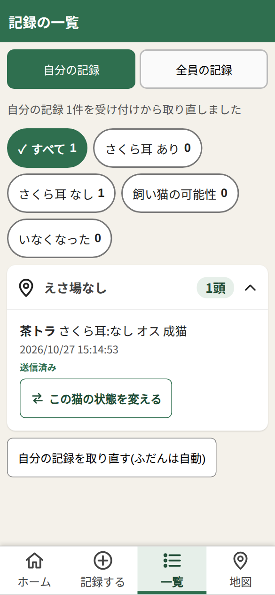
「全員の記録」を押すと、全員分が出ます。地図の印・集計・えさ場にも全員分が入ります。
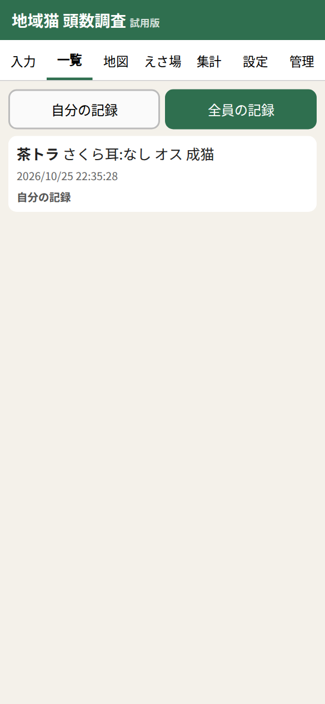
集計も全員分になります(えさ場ごと・区画ごと)。
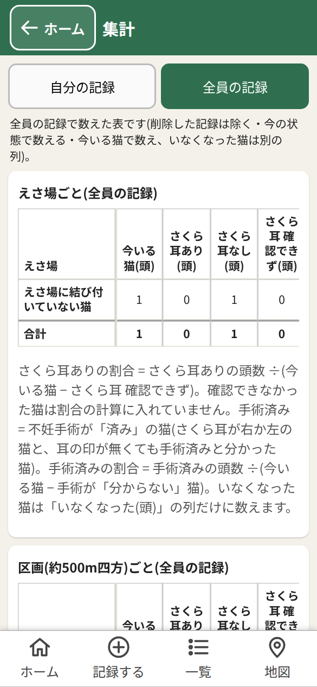
- 見られるだけで、他の人の記録を直す・消すことはできません。
- 削除された記録・えさ場は、全員の記録にも出ません(集計にも入りません)。
- 全員の記録でも、写真が出ます(受け付けから読み込みます。「ほかのスマホで記録した写真」)。
- 「いなくなった」猫は、全員の記録でも、ふだんは一覧・地図に出ず、集計では「いなくなった(頭)」の列に数えます。
- 全員の記録・管理の画面は、Google の通行証だけでは開けません。「Google でもう一度ログインしてください」と出たら、ログインし直してください。
- カードの人には、この切り替えは出ません。
- 記録に残るのは、人を見分ける番号だけです。メールアドレスや呼び名は記録に入りません。
管理者へ全体を見る人・管理者
「管理者」の役割の Google アカウントでログインすると、ホームの小さなボタンに「管理」が出ます。人の登録・止める・ログインカードの発行は、ここでします。シートを直接さわる必要はありません。
ホームの「管理」を押します(管理者だけに出ます)。
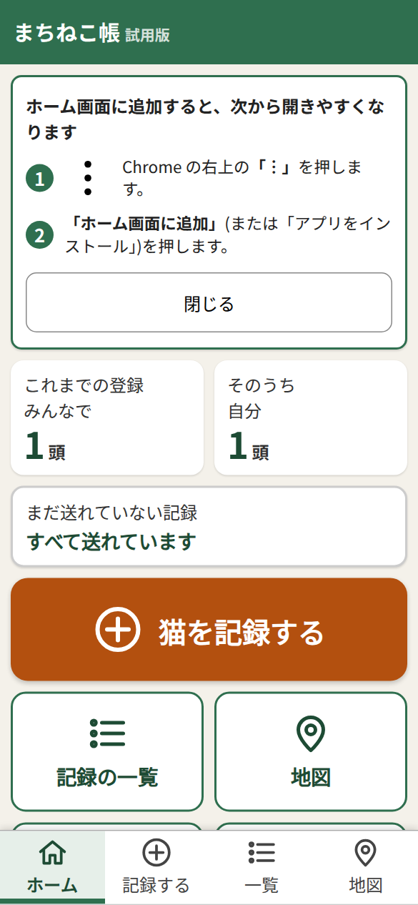
「管理」の画面です。上から「Google の人を登録」「ログインカードを作る」「入力者の一覧」が並びます。
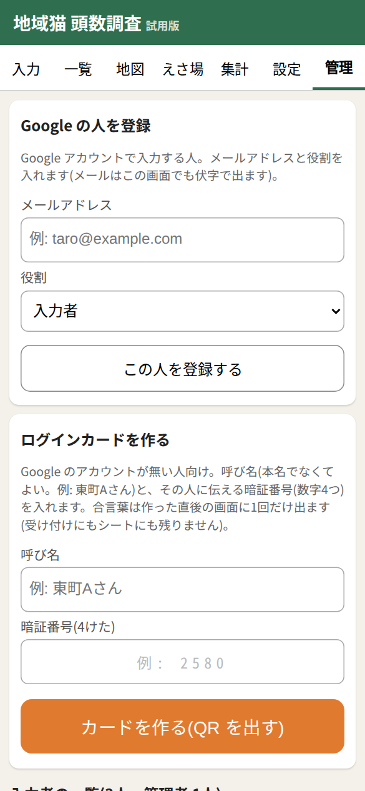
Google の人を登録する・役割を変える
メールアドレスと役割(入力者/全体を見る/管理者)を選び、「この人を登録する」を押します。
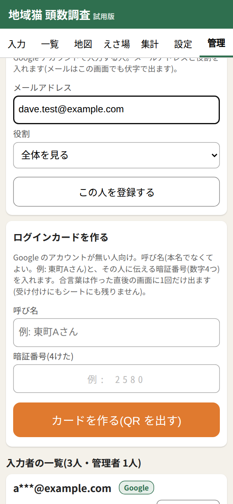
- 役割は、一覧の「役割」の選択肢で、あとから変えられます。
- 管理者を外すこともできますが、最後の1人は外せません。
- メールアドレスは、画面では伏せ字(a***@example.com)です。「メールを見る」を押した時だけ全部出ます。
ログインカードを作る(Google のアカウントが無い人向け)
呼び名(本名でなくてよい。例: 東町Aさん)と、その人に伝える4けたの暗証番号を入れ、「カードを作る(QR を出す)」を押します。
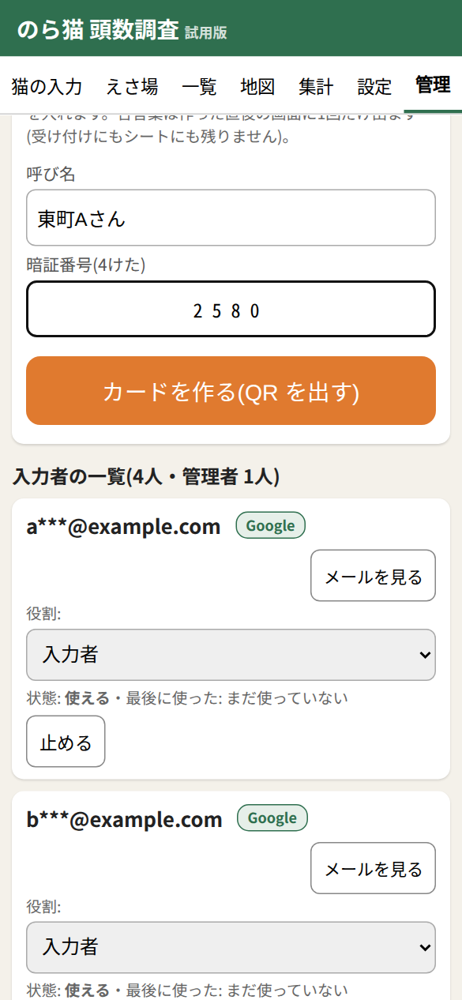
カードの画面が出ます。この画面を閉じると、このカードの合言葉は二度と出ません。 先に、次のどちらかを済ませてください。
画面の下にボタンが並びます。「印刷する」「NFC タグに書き込む」「URL をコピー」「URL を文字で見る」。済んだら「閉じる」を押します。
紙のカード(QR)を印刷する
- 「印刷する(紙のカード)」を押すと、呼び名と QR だけが印刷されます(暗証番号は印刷されません)。
- 名刺くらいに切って渡します。
NFC タグに書き込む
空の NFC タグ(NTAG213・NTAG215 など)を使います。
- Android の場合: Chrome でこの画面を開き、「NFC タグに書き込む」を押して、タグをスマホの裏側に当てます。「書き込みました」と出れば完了です。タグをかざして、アプリが開くか確かめてください。
- iPhone の場合: iPhone では、画面から直接書き込めません。無料アプリ「NFC Tools」を使います。①カードの画面で「URL をコピー」を押す ②NFC Tools →「書く」→「レコードを追加」→「URL/URI」に貼り付ける ③「書く」を押して、タグを iPhone の上の端に当てる ④書けたら、別の短い文字をコピーし直して、コピーした URL を残さないようにする。
暗証番号を伝える
暗証番号は、口頭か電話でその人に伝えます。カードに書かない・メールに書かない決まりです。
入力者の一覧・止める・番号を戻す・作り直す
一覧に、Google の人とカードの人が並びます。止めている人は赤い点線で出ます。
「番号を戻す」: 番号を忘れた時・5回間違えて止まった時に使います。新しい4けたを入れて、その人に伝えます。カードはそのまま使えます。
- 「止める」: その人が使えなくなります。記録は消えません。カードの人も Google の人も、スマホの通行証がその場で使えなくなります。「また使う」で戻せます。
- 「カードを作り直す」: カードをなくした時に使います。前のカードはすぐ使えなくなり、新しいカードの QR を作ります。記録は同じ人につながります。
- 管理の操作は、シート「管理の記録」に1行ずつ残ります(誰が・いつ・何を。メールは伏せ字)。
削除された記録・えさ場を見る・元に戻す
「全員の記録」にした時、「一覧」と「えさ場」の画面に「削除済みも見る(管理者)」が出ます(管理者だけ)。入れると、削除された物が「削除済み」の印つきで出ます。地図と集計には出ません。
- 削除から30日の間は、管理者がほかの人の物も「元に戻す」で戻せます(シート「管理の記録」に1行残ります)。
- シートの行は消えません。「削除済み」「削除した日時」「削除した入力者ID」の列で分かります。
不具合の知らせを見る(管理者だけ)
管理の画面の「不具合の知らせを開く」で、入力する人が送った不具合と、アプリが自分で気付いた誤り(「自動」の印)の一覧が新しい順に出ます。上のボタンで状態(新しい・対応中・済み)ごとに絞れます。押すと中身と画面の写しが開き、状態と管理者のメモを変えられます。同じ内容はシート「不具合の知らせ」にも1件1行で入ります。画面の写しは、写真のフォルダの中の「不具合の写し」に入ります(共有のリンクは作りません)。
補足: 不具合の知らせの中身と写しを見られるのは管理者だけです。全体を見る人・入力する人には見えません。送った本人は、自分の知らせの状態だけ見られます。
試しの記録をすべて消す(管理者だけ)
本番の調査を始める前に、試しに入れた猫の記録・状態の変化・えさ場と写真を、全員の分まとめて消します。管理の画面(管理者だけに出ます)の、いちばん下にある「試しの記録をすべて消す…」を使います。元には戻せません。本番の記録が入っていないことを確かめてから使ってください。
- 2回確かめられます。1回目の画面で内容を読んで「わかった。次へ」を押し、2回目の画面で、欄に「消す」と打ってから「すべて消す」を押します(違う文字では消えません)。
- 消えるもの: シートの「記録」「変化」「えさ場」の2行目から下(見出しの行は残ります)と、写真のフォルダの中の写真(フォルダは残り、写真はドライブのごみ箱に30日残ります)。残るもの: 「入力者」(登録とカード)・「設定」・「選択肢」・「通行証」(ログインはそのまま)・「管理の記録」。
- 押した人のスマホの記録も消えます。この端末に未送信の記録があると、2回目の画面で「送らずに捨てる」か「端末に残して、あとで送る」かを選べます(はじめは「捨てる」に印が入っています)。ほかの人のスマホは、次の自動の取り直しで、送信済みの記録が消えます(未送信の記録は残ります)。
- 押した記録は、シート「管理の記録」に1行残ります。
選択肢をシートで直す
毛色・さくら耳などの選択肢は、スプレッドシートの「選択肢」シートで変えられます。プログラムの貼り替えは要りません。変えた内容は、ログインした人のアプリに、次に開いた時から出ます。
- 足す: 項目名と選択肢の名前を、新しい行に書きます。
- 名前を変える: 選択肢の名前を書き換えます。
- 外す: 「使わない」の列に何か入れます(行は消さずに残せます)。
- 並べ替える: 行の並びを変えると、アプリの並びも変わります。
- さくら耳の「右・左・なし・確認できず」は集計の意味があるので、名前を変えないでください(足すのは自由です)。
- 不妊手術(済み・まだ・分からない)は、集計の意味があるので、このシートでは変えられません(アプリに決めてあります)。毛の長さ(短毛・長毛・分からない)も同じく、このシートでは変えられません。
- 毛色: 「その他」を選ぶと、アプリに自由に書く欄が出ます。記録には「その他:書いた文字」と残り、近くの同じ猫の注意では「その他」として比べます。2026年10月の版で毛色を15種類にしました。選択肢シートの毛色が前の版のまま(手で変えていない)なら、新しい版にした最初の呼び出しで15種類に入れ替わります。手で変えていた時は、そのまま残ります(新しい15種類にしたい時は、手で書き換えます)。
- 飼い猫の可能性の理由には、「、」と「:」は使えません。1つ50字までです。
- いなくなった理由も、項目「いなくなった理由」の行で変えられます(「:」は使えません)。前からある選択肢シートには、新しい版にした最初の呼び出しで、この5行が下に自動で足されます(前の行は変えません)。名前を変えても、前の名前で入った記録はそのまま残ります。
- シートを空にした・見出しを変えたなどで壊れた時は、アプリに入っている元の選択肢で動きます。
- シートの名前は「選択肢」です。前の版で作ったシートは、新しい版にした最初の呼び出しで、名前だけ「選択肢」に変わります(中身・見出しはそのまま使います)。
「検算」のシートで数を確かめる
スプレッドシートの「検算」シートは、表計算の式だけで、えさ場ごと・区画(約500m四方)ごと・合計の数を数え直した表です。アプリの集計(管理の画面の人が「全員の記録」にした時の集計)と同じ数になれば合っています。新しい版にした最初の呼び出しで、自動で作られます。
- 列はアプリの集計と同じです: 今いる猫・さくら耳あり・なし・確認できず・ありの割合・手術済み・手術済みの割合・飼い猫の可能性あり・いなくなった。
- 数え方もアプリと同じです: 削除した記録は数えない・いなくなった猫は「今いる猫」に入れず右の列だけ・ありの割合は「確認できず」を除いた頭数で割る・手術済みは「不妊手術」が「済み」の猫(この欄が空の前からの記録は、さくら耳が右か左なら済み)・手術済みの割合は手術が「分からない」猫を除いた頭数で割る。
- 「手術済み」の列が無い前の形の検算シートは、新しい版にした最初の呼び出しで、1回だけ今の形に書き直されます(式だけのシートなので、数は消えません)。
- 左の表が「えさ場ごと」、右の表が「区画ごと」です。合計は表のいちばん上の行です(アプリの表では下)。並びは、記録に出てきた順です。
- 式は、記録シートの列を見出しの名前で探します。記録シートの右に列が増えても壊れません(見出しの名前は変えないでください)。
- えさ場か区画が100を超えると、3行目に「表の行が足りません」と出ます。その時は管理者に知らせてください。
- 式だけのシートなので、手で書き換えないでください。壊れた時は、このシートを消すと、次にアプリが使った時に作り直されます。
困った時
よくある質問
- 「登録されていません」と出る: 管理者が登録していないアカウント、または作り直す前の古いカードです。管理者に連絡してください。
- 「止まっています」と出る: 暗証番号を5回間違えた、または管理者が止めています。管理者に連絡してください。
- 位置が取れない: スマホの位置情報の許可を確かめてください。取れない時は「地図で場所を指定」を使えます。
- 「電波が弱いようです。つながったら自動で送ります」と出る(未送信のまま): 電波が弱い・無いだけです。記録は消えていません。アプリは1分ごとに自動で送り直します。電波のよい所へ行けば、押さなくても送られます(すぐ送りたい時は、ホームの「まだ送れていない記録」の「↑送る」を押します)。
- 「受け付けが応えません。管理者に知らせてください」と出る: 電波ではなく、受け付け(管理者のシート側)が正しい返事をしない状態です。記録はスマホに残っていて、消えていません。何度か待っても変わらない時は、管理者に知らせてください(直ると、自動で送られます)。
- 自分の記録が一覧に見えない: 一覧の上の絞り込みが「すべて」になっているか確かめてください(「さくら耳 あり」などを選んでいると、当てはまる猫だけが出ます)。えさ場の名前を押すと、閉じているえさ場が開きます。「いなくなった」にした猫は、絞り込みの「いなくなった」を選ぶと出ます。新しいスマホでは、ログインの直後に自動で出ます(出ない時は電波を確かめて「自分の記録を取り直す」)。
- 猫がいなくなった: 削除ではなく、「状態が変わった」→「いなくなった」を使います(「記録を直す」の「いなくなった時」)。
- 上に赤い帯で「前の画面が開いたままです」と出る・押しても保存されない: 前に開いたこのアプリの画面(ほかのタブ・ホーム画面に置いたアプリ)が残っていて、新しい版に切り替えられない状態です。このアプリのほかのタブや画面を閉じてから、「開き直す」を押してください。記録は消えていません。
- 上に青い帯で「新しい版があります。」と「更新」が出る: アプリの新しい版が出た知らせです。アプリを開いた直後(まだ何も触っていない数秒の間)に新しい版が届いた時は、押さなくても自動で1回だけ読み込み直して新しい版になります。使っている途中に届いた時は、勝手に読み込み直さず、この帯を出して待ちます。「更新」を押すと、新しい版に入れ替わって画面が1回読み込み直されます。この端末の記録・まだ送れていない記録は消えません。入力の途中なら、先に保存してから押してください(入力の途中には、勝手に読み込み直しません)。今の版はホームの「設定」の「アプリの版」で見られ、「新しい版を確かめる」でも確かめられます。
- 「時間内に終わりませんでした」「返事がありませんでした」と出る: 保存や送信が止まったので、途中でやめた知らせです。入れた内容は残っています。画面を開き直すか、電波のよい所で、もう一度押してください。
- NFC をかざしても何も起きない: スマホの NFC が切れているかもしれません(設定でオンに)。カードが QR なら、アプリの「カードの QR を読む」で読んでください。
- カードでログインしたのに、次に開くとログインが消えている(iPhone): カメラから開いた小さなブラウザでログインした可能性があります。先に「ホーム画面に追加」をして、ホーム画面のアプリの中で、もう一度「カードの QR を読む」を押してください(暗証番号は同じです)。
- ログアウトしたい: ホームの「設定」を押し、「ログアウト」を押します。
- この端末の記録を消したい: ホームの「設定」の「この端末の記録をすべて消す」。消えるのはスマホの控えだけで、送信済みの記録は受け付け側に残っています。
不具合を知らせる
ホームの「不具合を知らせる」を押すと、不具合を知らせる画面が出ます。その中の「不具合を知らせる」を押します。
「どの画面で」を選び、「何をしたら」「どうなった」を書きます(それぞれ500字まで)。人の名前・住所・電話は書かないでください。
画面の写しがあれば「写しを選ぶ」で2枚まで付けられます(なくてもかまいません)。送る前に小さくして、位置情報を消します。
「送る」を押すと「受け付けました(番号 〇〇)」と出ます。電波が無い時は、スマホに残して、電波が戻ったら自動で送ります。
- 一緒に送られるのは、アプリの版・スマホの種類(OS とブラウザの名前だけ)・画面の名前・直前の誤り(5件まで)・送った時刻です。場所・猫の記録の中身・メールは送りません。送った人は入力者の番号で残ります。
- 1人1日10件まで送れます。
- 不具合を知らせる画面の「送った知らせ」で、自分が送った知らせの状態(新しい・対応中・済み)が見られます。
- 「アプリの誤りを自動で知らせる」に印があると(はじめは印あり)、アプリが自分で気付いた誤りを1日1回まとめて送ります。誤りの文から、場所の数字・メール・ログインの鍵らしい物を消してから送ります。印を外すと送りません。
- 分からない事は、管理者に聞いてください。
「前の画面が開いたまま」の時の案内です。
補足: この「使い方」には、アプリのホームの「使い方」(ログイン前は、ログインの画面の「使い方」)から来られます。上の「← ホーム」で、アプリに戻れます。